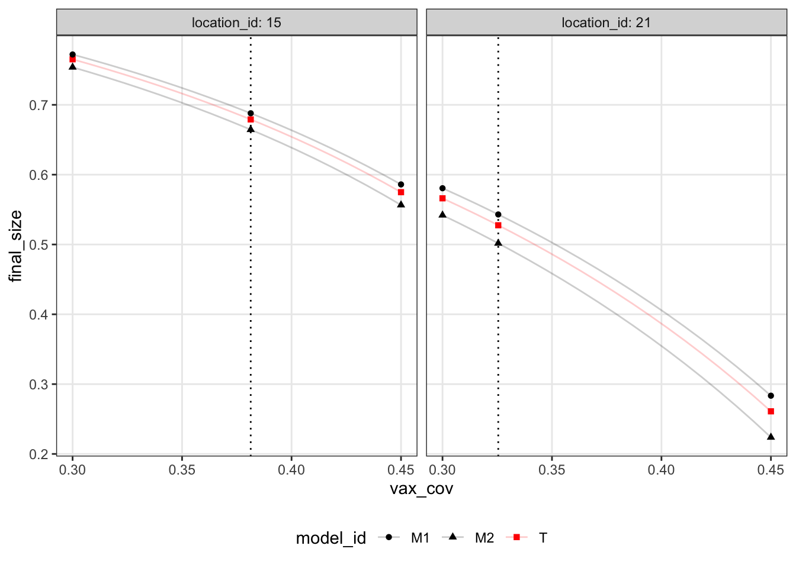
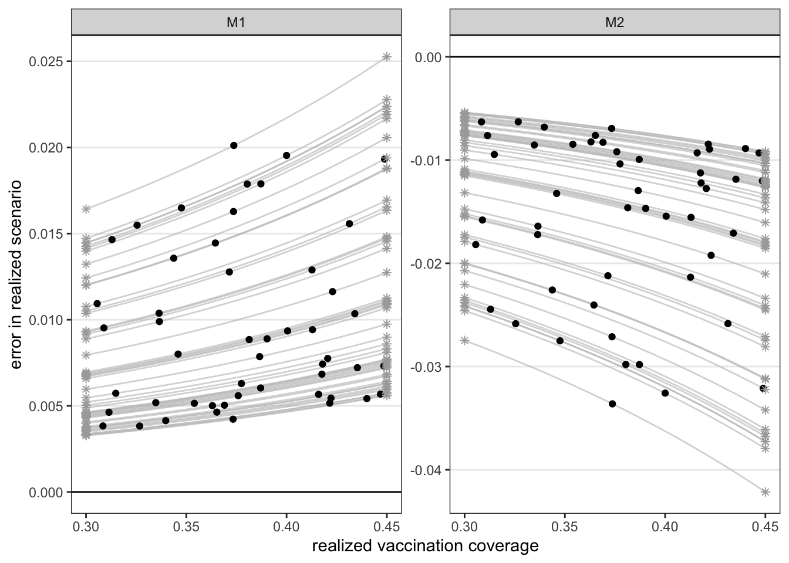
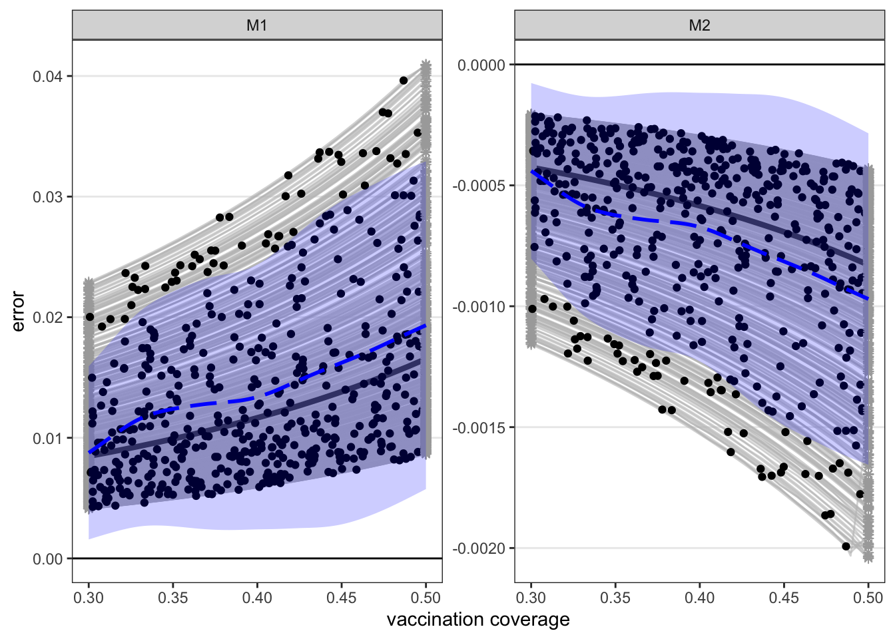
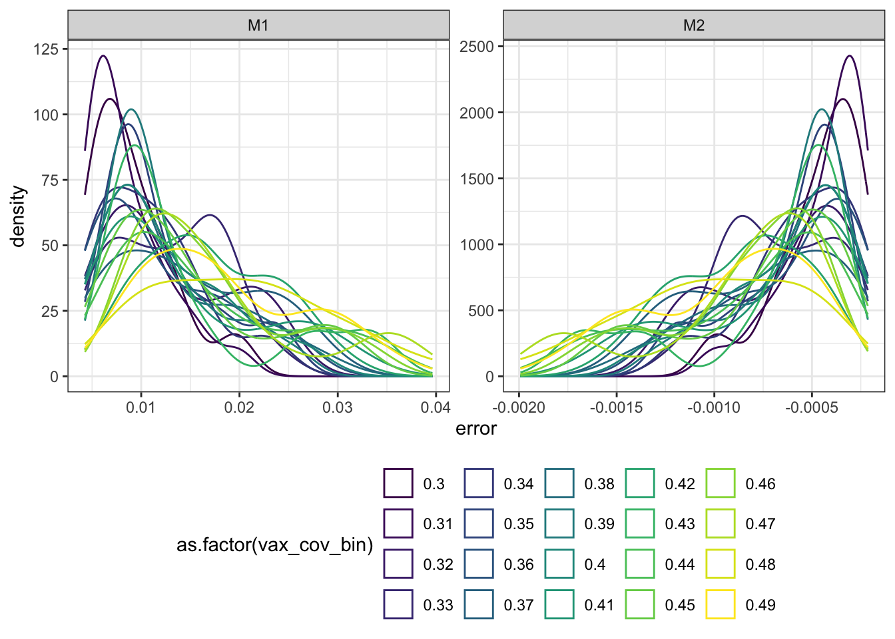

[1] 1
We are considering a case where models are projecting final epidemic size (in an assumed SIR model) for two vaccination coverage scenarios, 30% vs. 50% final coverage. We assume that each model makes \(n\) independent projections (e.g., across locations), which differ in their \(R_0\) values and their realized vaccination coverage. Together, we can use these values to get an estimate of final epidemic size.
Following this framework, the simulation experiment proceeds as follows:
finalsize package in R, calculate
Note: this is the simplest simulation setup. Eventually we will modify/complicate the setup to test the sensitivity of the method to various assumptions. For now, let’s look at this simple case.
Let’s say we have 2 models and 50 locations. The below figure shows what our simulation generates for two random locations: (1) projections from each model for the scenarios of interest, and the realized scenario value (projections in black points, realized scenario value in dotted vertical line), (2) “true” final epidemic size foreach of these scenario values. Note, since this is a simulation, we can also calculate final size at every other scenario value, which is shown with the light lines.
[1] 1
Then, for evaluation, we can calculate the two errors we are interested in:
In our proposed method (see Overleaf file), we use variation in realized scenario value across locations to estimate model-level error. This plot illustrates the idea. For each model (panel), we plot the realized scenario error from each location as a function of the realized vaccination coverage (black points). These points are drawn from an error function (that we only know/can calculate because this is a simulation), which is \(e^m(x) = P^m(y|x) - P^*(y|x)\) (gray lines). Then, the error in the scenarios that we originally modeled is \(e^m(x_1)\) and \(e^m(x_2)\) (gray stars) - the distribution of these values is what we are ultimately interested in estimating.

To esitmate these distributions of error at the scenarios that were modeled (i.e., distribution of gray stars at \(x_1 = 0.3\) and \(x_2 = 0.5\)), we propose to fit the error distribution function across the scenario axis using the error at the realized scenario we have across locations. Here, we let \(e^m(x) = \beta_0 + g(x) + \epsilon_i(x)\) where \(\epsilon_i(x) \sim \text{N}(0, \sigma(x))\). We use a GAM to fit both \(g(x)\) and \(\sigma(x)\). In particular, I am using the gamlss function to do the fitting. Here is the code:
# filter to one model, and only error at realized scenario
dat_filt = errors_df %>%
filter(model_id == paste0("M", i), scenario_id == "T")
# fit GAM with cubic spline for mu and sigma
gam_fit <- gamlss(
error ~ cs(vax_cov), sigma.formula = ~ cs(vax_cov),
data = dat_filt, family = NO, trace = FALSE
)I will re-run the simulation with an unrealistic amount of locations (\(n = 500\)) to illustrate the challenges with fitting this. The blue line and shaded region shows the median and 95% prediction interval of the fitted model.

The fit is bad because our normal distribution assumption fails. Here, I’ve binned the points based on their realized vaccination coverage (x-axis value). But, a gamma distribution, for example, won’t handle the negative errors. And a skew normal doesn’t seem to capture the shape either.

Two questions:
I’ll also send the above sample data in case you’d like to play around. A quick guide to the simulation data:
head(t_large$errors) model_id location_id scenario_id vax_cov R0 final_size true_final_size
1 M1 1 S1 0.3 3.051092 0.8301936 0.8234264
2 M2 1 S1 0.3 3.006275 0.8230870 0.8234264
3 M1 2 S1 0.3 2.096499 0.5610488 0.5397253
4 M2 2 S1 0.3 2.051682 0.5386481 0.5397253
5 M1 3 S1 0.3 2.644476 0.7509524 0.7403127
6 M2 3 S1 0.3 2.599659 0.7397778 0.7403127
error relerror
1 0.0067672036 0.0082183465
2 -0.0003394037 -0.0004121847
3 0.0213234795 0.0395080231
4 -0.0010771935 -0.0019958181
5 0.0106396207 0.0143717922
6 -0.0005349468 -0.0007225957model_id: unique identifier for different models (here M1 or M2 for each model)
location_id: unique identifier for different locations (here integer from 1 to 500)
scenario id: denotes vaccination scenario (includes S1 and S2 for the scenarios that were modeled, T for the scenario value that was realized in that location, and E for the ‘extra’ values that allow us to define the lines between the points)
vax_cov: vaccination coverage associated with this scenario
R0: R0 for that location/model
final_size: final epidemic size, given vax_cov and R0
true_final_size: observed final epidemic size in that location for that vaccination coverage, given the true R0
error: difference between final_size and true_final_size
relerror: relative difference between final_size and true_final_size